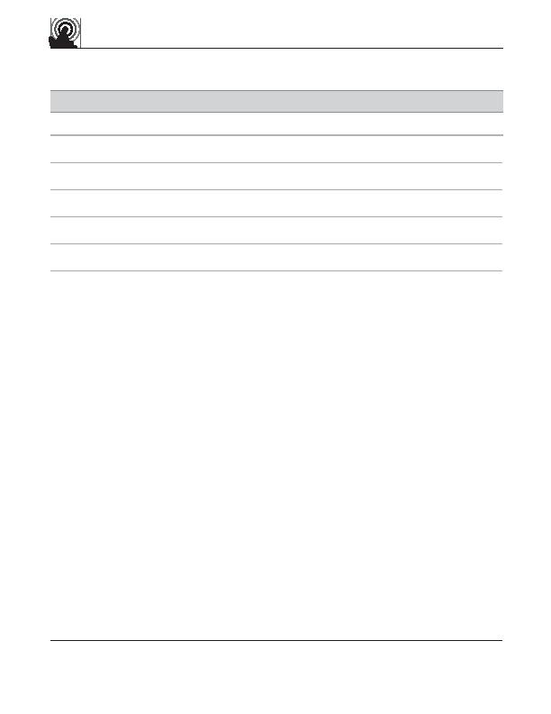

touch gesture
reference guide
Accept
p
Supporting materials for this guide can be found online:
http://www.lukew.com/touch/
user action
gesture
DRAWING ACTIONS
Draw a slash on surface with fingertip
Draw a question mark on surface with fingertip
Draw an “X” on surface with fingertip
Reject
Scratch out area on surface with fingertip
Draw a checkmark on surface with fingertip
Get help
Undo
Cut